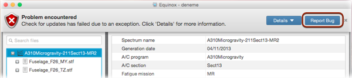

Reporting a bug is quite easy. In most of the cases, whenever an error occurs the - Report Bug
button will be seen within the error message as shown in
the following figure. Just click on the - Report Bug
button to send detailed bug report to the server.

It is also possible to compose and send a bug report manually. For this, click - Help → Report a Bug
.
Describe the problem as precisely as possible with the correct event order. What happened just before, during and after the problem occurred?
You can use upto 1000 characters. The better the description the sooner the solution.
In addition to your description, information about your system can also be added to the report. System information is useful for resolving
platform specific problems. Following system information is collected;
- Operating system name, version and architecture.
- Java Virtual Machine name, vendor and version.
- Java Runtime Environment name and version.
- Used, free, total and maximum available system memory.
Finally, Equinox event log is important to understand the event sequence leading to the problem. This is also optional.